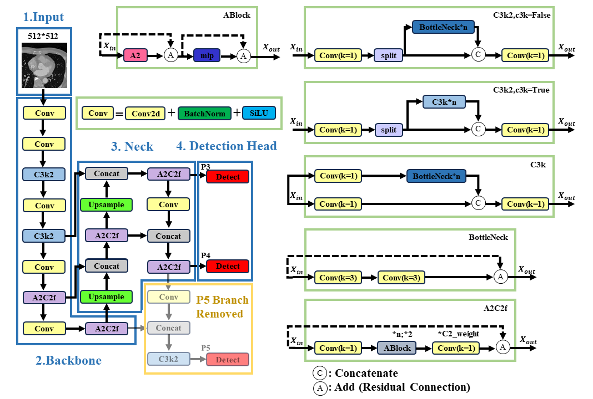

The following video presents consecutive cardiac CT slices from one patient. The left side shows the original CT images, while the right side shows the corresponding images with bounding-box annotations of the aortic valve.
Consecutive cardiac CT slices from one patient. The original CT images are shown on the left, and the corresponding aortic valve bounding-box annotations are shown on the right.
Deep learning has been widely applied to medical image analysis and has shown strong potential for computer-aided diagnosis. However, public datasets for aortic valve detection in cardiac CT remain limited because image acquisition and anno tation require specialized expertise. This study establishes an aortic valve object detection dataset from cardiac CT images of 100 patients, including preprocessing, manualannotation, and dataset splitting. YOLOv9, YOLOv11, and attention-based YOLOv12 models of different scales are evaluated. To address the small size of the aortic valve, YOLOv12-p5 is proposed by removing the P5 detection branch and retaining P3 andP4. Mostmodelseffectivelylocalizetheaorticvalve. Inthesingle model comparison, YOLOv12-p5 achieves Precision close to YOLOv12 but lower Recall and mAP50:95, indicating that P5 semantic information remains useful. In the five-fold ensemble comparison, YOLOv12-p5 achieves the highest Precision and Recall and ties with YOLOv9 for the highest mAP50, although its mAP50:95 is lower. Class activation mapping further shows that the model mainly focuses on the aortic valve region. The dataset and workflow provide a reference for future research on automatic aortic valve detection.
To adapt YOLOv12 to the aortic valve detection task, we propose YOLOv12-p5 by removing the P5 detection head while retaining the P3 and P4 detection heads. Since the aortic valve occupies a relatively small region in cardiac CT images, the proposed architecture focuses on higher-resolution feature maps for small-object localization and reduces the computational complexity associated with the large-object detection branch.
